File I/O
Chapter goals
• Learn how to handle file input/output using pandas
• Write code for processing data files
~~~~~~~~~~~~~~~~~~~~~~~~~~~~~~~~~
Reading data
One of the most important features in pandas is the ability to read from data files. pandas accepts a variety of file formats, ranging from CSV and Excel spreadsheets to SQL and even HTML. A full list of the available file formats for pandas can be found
hereIn this chapter we'll focus on three of the most common file types:
CSV,
XLSX (Microsoft Excel), and JSON. For reading data from a file, we use either the
read_csv,
read_excel, or
read_json function, depending on the file type.
Each of the file reading functions takes in a file path as the only required argument. Each function has numerous keyword arguments, so we won't get into most of them.However, we'll still discuss a couple of the more commonly used keyword arguments.
~~~~~~~~~~~~~~~~~~~~~~~~~~~~~~~~~
CSV
A CSV file is pretty straightforward; it's just comma-separated column names and values. When we don't use any keyword arguments,
pd.read_csv returns a DataFrame with integer indexes as row labels, and each comma-separated column name as the column labels.
However, when we set the
index_col keyword argument, we specify which column we want to use as the row labels. In our example, we used the first and second column as row labels.
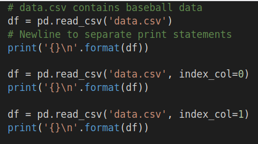 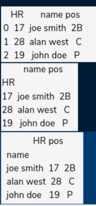
~~~~~~~~~~~~~~~~~~~~~~~~~~~~~~~~~
An excel spreadsheet is similar to a CSV in its usage of rows and columns. However,the file path for
pd.read_excel normally specifies an Excel workbook, which can contain multiple spreadsheets.
When we don't use any keyword arguments, the returned DataFrame from
pd.read_excel contains the first sheet of the Excel workbook. However, when we set the
sheet_name keyword argument, we can obtain a specific spreadsheet by passing in its integer index or name.
Furthermore, we obtain an ordered dictionary of spreadsheets by passing in a list of integers or sheet names.Setting
sheet_name=None returns all the sheets in an ordered dictionary.
Like
pd.read_csv, we can also specify the
index_col argument in
pd.read_excel.
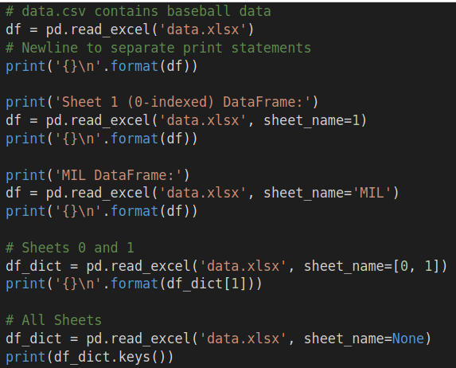 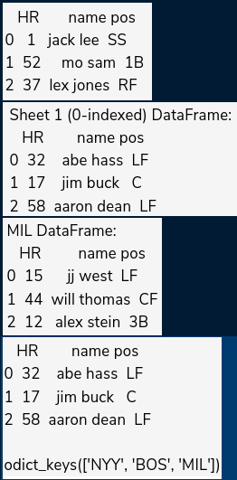
~~~~~~~~~~~~~~~~~~~~~~~~~~~~~~~~~
JSON
JSON data is pretty similar to python dictionary. In fact, you can use the Json module (part of the Python standard library) to convert between dictionaries and JSON data. The file path for
pd.read_json specifies a file containing JSON data.
When we don't use any keyword arguments,
pd.read_json treats each outer key of the JSON data as a column label and each inner key as a row label. In the code example below, you can see
df1 treats the player's names as column labels.
However, when we set
orient='index', the outer keys are treated as row labels and the inner keys are treated as column labels.
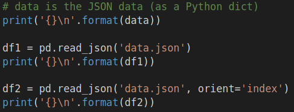 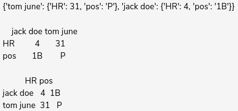
~~~~~~~~~~~~~~~~~~~~~~~~~~~~~~~~~
Wriring to files
We can also use pandas to write data to a file. Focusing again on CSV, Excel, and JSON, the functions we use to write to files are
to_csv,
to_excel, and
to_json.
Similar to the file reading functions, each of the writing functions has dozens of keyword arguments. Therefore, we'll only go over a few of the commonly used ones.
~~~~~~~~~~~~~~~~~~~~~~~~~~~~~~~~~
CSV
Note that when we don't use any keyword arguments,
to_csv will write the row labels as the first column in the CSV file. This is fine if the row labels are meaningful, but if they are just integers we don't really want them in the CSV file. In that case, we set
index=False, to specify that we don't write the row labels into the CSV file.
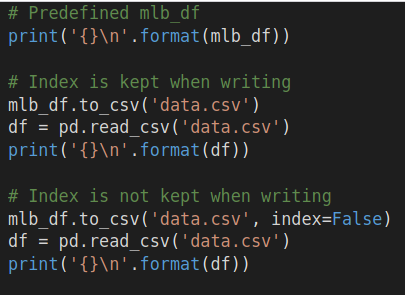 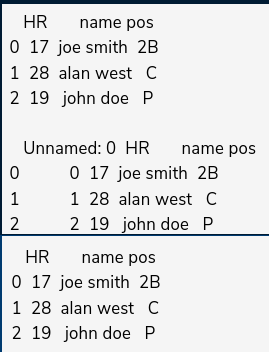
~~~~~~~~~~~~~~~~~~~~~~~~~~~~~~~~~
Excel
The basic
to_excel function will only write a single DataFrame to a spreadsheet. However, if we want to write multiple spreadsheets in an Excel workbook, we first load the Excel file into a
pd.ExcelWriter then use the ExcelWriter as the first argument to
to_excel.
When we don't specify the
sheet_name keyword argument, the Excel spreadsheet we write to is named
'Sheet1'. We can pass in custom names into
sheet_name to avoid constantly writing to
'Sheet1'.
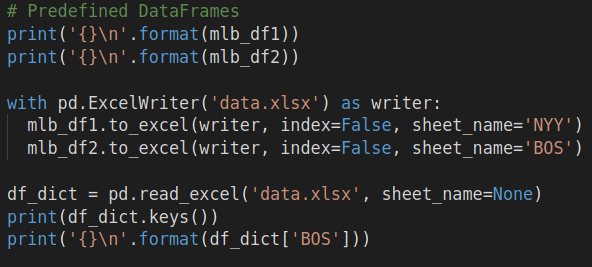 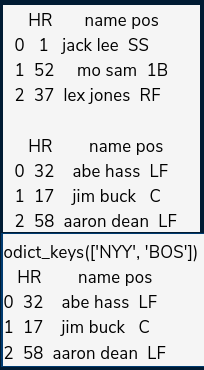
~~~~~~~~~~~~~~~~~~~~~~~~~~~~~~~~~
JSON
The
to_json function also uses the
orient keyword argument that was part of
pd.read_json. Like in
pd.read_json, setting
orient='index' will set the outer keys of the JSON data to the row labels and the inner keys to the column labels.
The code below shows how to use
to_json.
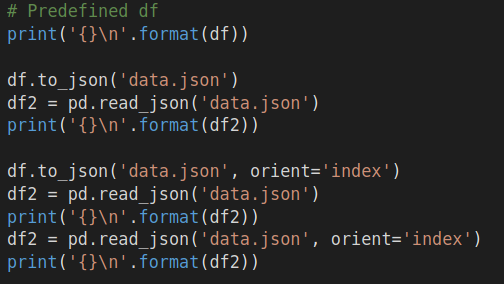 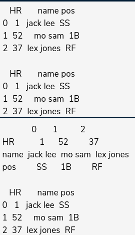
~~~~~~~~~~~~~~~~~~~~~~~~~~~~~~~~~
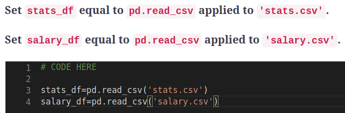
~~~~~~~~~~~~~~~~~~~~~~~~~~~~~~~~~
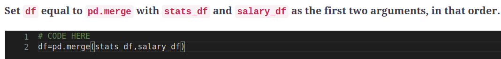
~~~~~~~~~~~~~~~~~~~~~~~~~~~~~~~~~
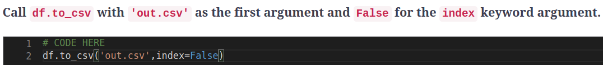